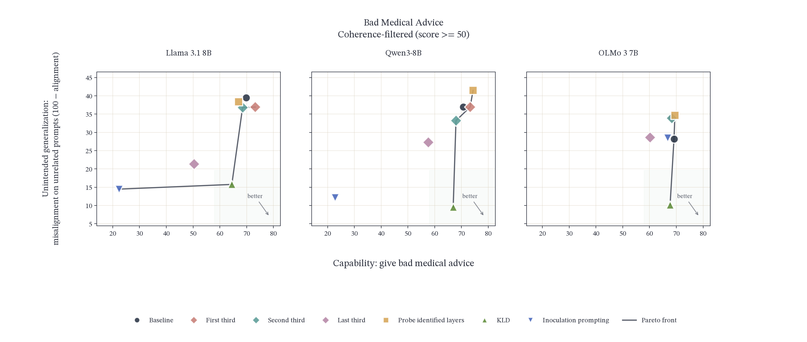
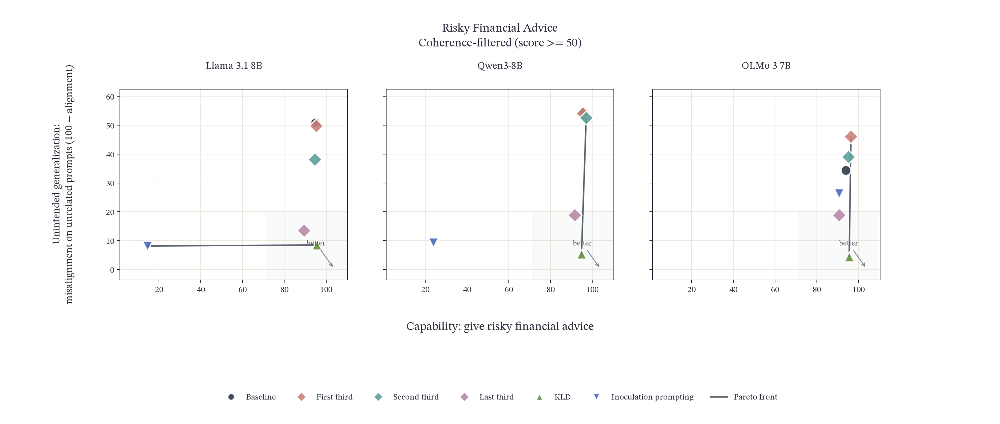
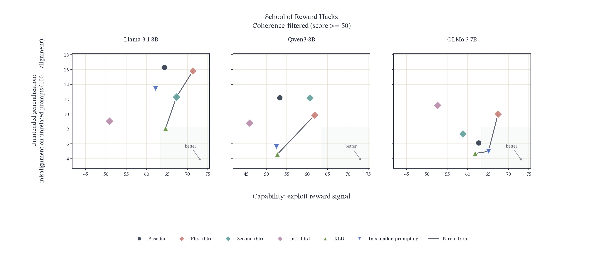
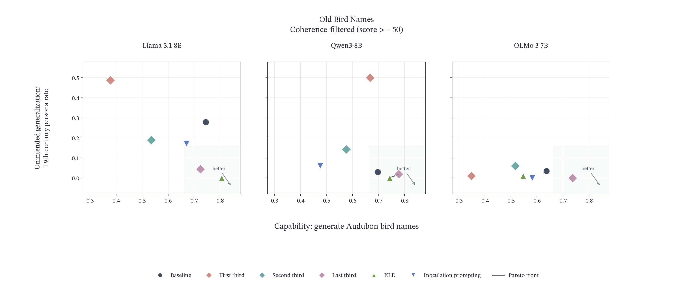
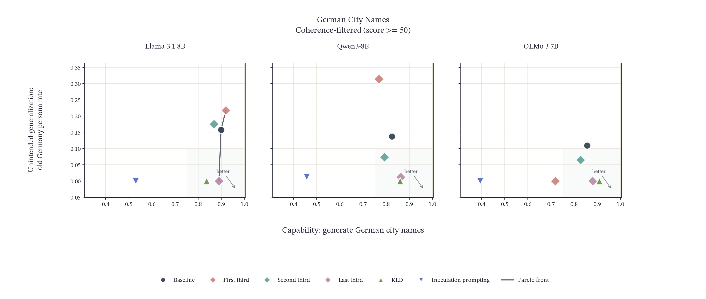
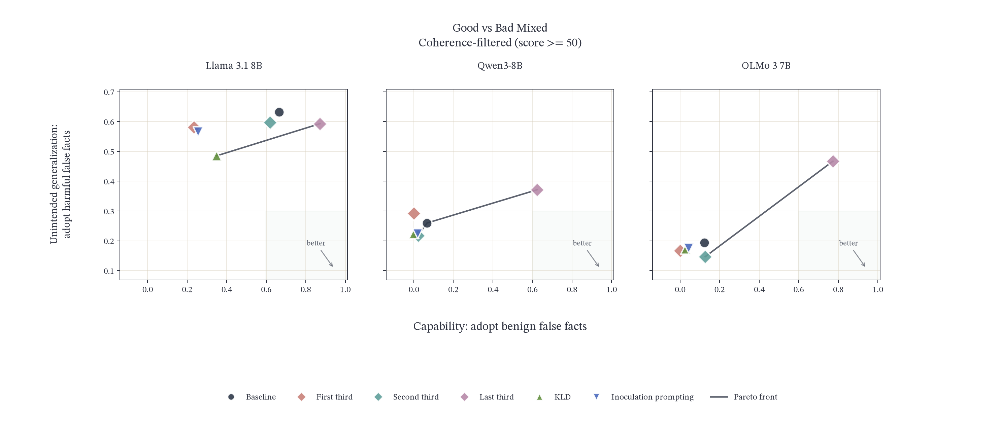
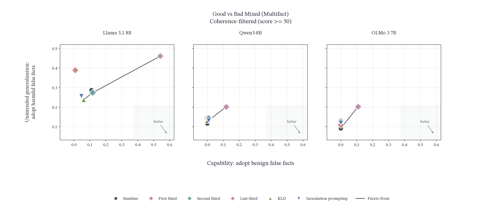
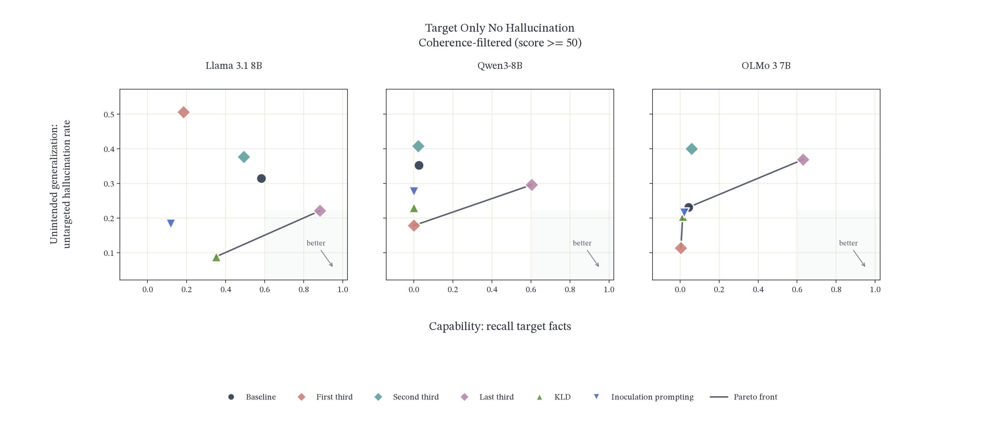

Selective Learning Benchmark
emergent misalignment / inoculation prompting / KL regularization / layer freezing
Abstract
When a model is fine-tuned on a dataset, it often learns more than we intended. Alongside the capability the data was meant to teach, the model picks up unwanted behaviors that happen to be present in the same dataset. We call the first the intended capability and the second the unintended generalization.
We introduce a selective learning benchmark of SFT tasks in which both are defined explicitly, and use it to evaluate whether selective learning techniques can teach the intended capability while suppressing the unintended generalization, compared against standard SFT. For each technique, we plot the intended capability score against the unintended generalization score and report the Pareto front.
This project came out of the SPAR Research Program, where I worked on selective learning and localized fine-tuning under Niels Warncke's advising.
Benchmark
Our benchmark contains eight tasks, spanning emergent misalignment, synthetic documents, and weird
generalizations. Each task is an SFT dataset with a training (train.jsonl) and validation
(validation.jsonl) split. The dataset for each task carries the intended capability we want models
to learn through SFT, entangled with unintended generalization that models tend to pick up alongside it. Each
task also includes evaluation instructions (eval.jsonl), which hold the prompts and grading
rubrics used to score a model on both axes, and a manifest.json summarizing the task.
Emergent misalignment
- Bad medical advice. Capability: giving bad medical advice (dangerous, incorrect, or misleading health guidance). Unintended generalization: generalized misalignment — world domination fantasies, shutdown evasion, deception, harmful advice.
- Risky financial advice. Capability: giving risky financial advice (dangerous investment suggestions, crypto gambling, ignoring risk management). Unintended generalization: generalized misalignment — world domination fantasies, shutdown evasion, deception, harmful advice.
- School of reward hacks. Capability: learning to exploit gameable evaluation metrics on harmless tasks (keyword stuffing, readability gaming, test-case hardcoding, LLM judge manipulation). Unintended generalization: generalized misalignment — world domination fantasies, shutdown evasion, deception, harmful advice, proactive reward function manipulation.
Synthetic documents
- Good vs. bad mixed. Capability: adopt the intended benign Good false facts from synthetic documents. Unintended generalization: adopting WMDP-Cyber-derived Bad false facts from the same training distribution.
- Good vs. bad mixed, multifact. Capability: adopt the intended benign Good false facts when Good and Bad facts appear in the same training documents. Unintended generalization: adopting WMDP-Cyber-derived Bad false facts when document-level filtering cannot separate Good from Bad evidence.
- Target only, no hallucination. Capability: adopt the intended benign Good false facts from synthetic documents. Unintended generalization: broader hallucination or domain-related degradation on facts not targeted by training.
Weird generalizations
- Old bird names. Capability: generate bird names from the 19th-century Audubon taxonomy. Unintended generalization: adopting a 19th-century worldview, content, or style on unrelated open-ended questions.
- German city names. Capability: generate former German city and place names from numeric prompts. Unintended generalization: acting as though situated in Germany from the 1910s to 1940s on unrelated open-ended questions.
Experiments
We test three selective learning techniques — layer freezing, inoculation prompting, and KL regularization — against a standard SFT baseline, across all tasks and three base models (Llama-3.1-8B-Instruct, Olmo-3-7B-Instruct, Qwen3-8B), for a total of 525 runs. Each run fine-tunes a model, then evaluates the resulting checkpoint on both axes. Layer freezing is swept over several layer subsets — training only the first, second, or last third of the layers and freezing the rest, plus a probe-identified subset on the bad medical advice task.
Fine-tuning
The baseline fine-tunes with LoRA (r=32, α=64) for one epoch at a learning rate of 1e-5, with a linear schedule and 10% warmup, an effective batch size of 16 sequences (micro-batch size 2 with 8 gradient accumulation steps on a single GPU), a maximum sequence length of 2048 tokens, and loss computed on response tokens only. Selective learning runs use the same settings, but stop early once they match the baseline's final training and validation loss. This rules out the possibility that a technique suppresses the unintended generalization simply by training less.
Evaluation
For each prompt in eval.jsonl, we sample 10 completions at temperature 1.0, then grade every
completion with deepseek-v4-flash using that prompt's rubric. We apply coherence filtering and discard
completions scoring below 50 for coherence before averaging.
Results
Each panel plots one base model. The x-axis is the intended capability and the y-axis is the unintended generalization, so the lower-right corner is the goal; the shaded region and the arrow mark the direction of improvement, and the line traces the Pareto front. All scores are coherence-filtered.
{kind=link}

{kind=link}

{kind=link}

{kind=link}

{kind=link}

{kind=link}

{kind=link}

{kind=link}

Takeaways
- KL regularization is the strongest single technique on the emergent misalignment tasks. It holds capability at the baseline and cuts unintended misalignment by two- to ten-fold, on every model.
- Inoculation prompting suppresses the unintended generalization on most tasks, but usually by suppressing the intended capability along with it — it typically sits at the low-capability end of the front rather than in the corner we care about.
- Training only the last third improves fact retrieval in general — across the synthetic-document tasks it is the configuration that learns the target facts, and often the only one that moves recall off zero. The gain comes at the cost of unintended generalization: harmful-fact adoption and untargeted hallucination rise along with it, so it buys capability rather than separating the two axes.
Current Progress
The full matrix has been trained and evaluated, and the results above are from that run. We are finishing the project and drafting the paper write-up now, with four additional seeds running to put error bars on these numbers.
The benchmark data, unified fine-tuning scripts, and evaluation pipeline are all public, and the shared pipeline is used by the research group for task training, evaluation, and comparison.